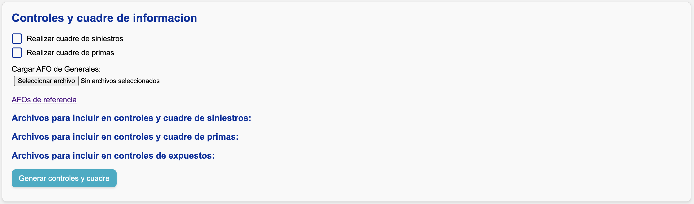
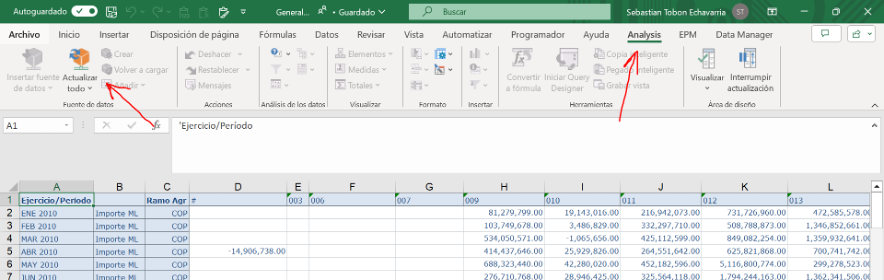

Generar controles de información y cuadrar contablemente
Después de la sección "Carga manual de información", verá la siguiente sección:

Los archivos AFOs
Los "AFOs" son archivos de Excel que, mediante el complemento Analysis For Office (AFO), muestran las cifras contables de cada mes para:
- Primas
- Pagos de siniestros
- Movimientos de reserva de aviso
Según las aperturas que haya definido en el archivo de segmentación, la aplicación le pedirá cargar los AFOs correspondientes.
AFOs de referencia
En este enlace encontrará los archivos AFO suministrados por Modelación Técnica para cada una de las compañías.
Actualización de AFOs
Si tiene instalado el complemento Analysis For Office, puede actualizar los AFOs manualmente usando las funciones mostradas en la siguiente imagen:

Cuadre contable
En la pantalla verá dos casillas de verificación (checkboxes) para indicar si desea realizar el cuadre contable de siniestros y primas. Si las activa, el sistema leerá y validará la parametrización de su archivo de segmentación.
Repartición de diferencias contables
En la parte inferior, bajo los títulos Archivos para incluir en controles y cuadre de siniestros, primas, y expuestos, debe seleccionar qué archivos (ya sea de extracción o carga manual) se compararán contra SAP.
- El sistema calcula las diferencias a nivel de ramo-compañía y las reparte en las aperturas definidas en las hojas Cuadre_Siniestros y Cuadre_Primas del archivo de segmentación.
- Si especificó más de una apertura, la diferencia se reparte proporcionalmente a la participación de cada apertura en la cifra contable histórica.
Info
Cada vez que extrae o carga un nuevo archivo de siniestros, primas, o expuestos, las listas de archivos disponibles se actualizan automáticamente.
Ejemplo
Supongamos que el ramo 040 tiene una diferencia de $100 en el pago bruto para agosto 2025. Especificamos dos aperturas para repartir la diferencia:
- "Autos", con $300,000 pagados en toda la historia.
- "Motos", con $100,000 pagados en toda la historia.
Para el cuadre contable, se asignarán $75 a "Autos" y $25 a "Motos" para agosto 2025.
Nota
En el cuadre de siniestros, toda la diferencia se asigna a la fecha de ocurrencia más reciente dentro de cada fecha de registro.
Almacenamiento de archivos
Los archivos quedan almacenados en:
- Datos originales →
data/pre_cuadre_contable - Datos cuadrados →
data/post_cuadre_contable
Controles de información
Si activa el cuadre contable, los controles se ejecutan dos veces:
- Con la información antes del cuadre.
- Con la información después del cuadre.
Los resultados se guardan en:
- Pre-cuadre →
data/controles_informacion/pre_cuadre_contable - Post-cuadre →
data/controles_informacion/post_cuadre_contable
Comparación entre las cifras de Teradata y SAP
Esta comparación solamente se realiza para primas y siniestros. Se compara cada cantidad en cada periodo contable a nivel de ramo-compañía (apertura máxima disponible desde SAP). La diferencia se calcula en valor absoluto y en porcentaje, tomando SAP como referencia.

Umbrales aceptados
Por defecto, el sistema alerta si detecta una diferencia mayor al 5% en alguna cifra para el mes de corte.
Nota
Este umbral puede variar según las características de cada negocio.
Consistencia histórica
El sistema compara la extracción actual contra la del mes anterior, tanto para Teradata como para SAP.
Para Teradata, la comparación se hace al nivel más detallado: apertura + periodo de ocurrencia + periodo de movimiento. Esto permite identificar variaciones de montos totales y cambios en fechas de ocurrencia o movimiento.
Alerta
Para sacar el máximo provecho, asegúrese de guardar en data/controles_informacion los controles generados en procesos anteriores.
Evidencias de extracción
En la carpeta controles_informacion, el sistema guarda dos evidencias:
-
El archivo de segmentación utilizado, con una hoja extra que incluye la fecha y hora de generación de controles.

-
Un pantallazo con la fecha y hora de generación de controles.